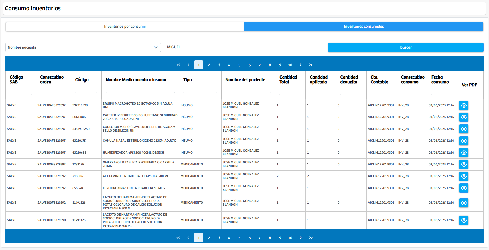

Modulos Sas-Web
Funcionalidades
Inventario
El módulo Inventario, perteneciente al área de Farmacia, permite consultar y realizar seguimiento al estado de los medicamentos e insumos que se encuentran disponibles en inventario, así como aquellos que ya fueron consumidos durante la atención de los pacientes. La interfaz se divide en dos secciones principales: Inventarios por consumir, donde se listan todos los productos existentes en stock con sus datos asociados, y Inventarios consumidos, que muestra un historial detallado de los medicamentos o insumos utilizados, incluyendo información como orden de consumo, nombre del paciente, cantidades aplicadas, cantidades devueltas, cuenta contable y fecha de consumo.
Esta segunda vista incorpora un sistema de filtros que permite buscar registros de manera precisa mediante tres criterios: nombre del paciente, consecutivo de consumo o consecutivo de orden, recuperando la información según el valor ingresado en el campo de texto. Además, cada registro ofrece la opción de visualizar un PDF con el detalle del consumo. En conjunto, el módulo facilita el control operativo y contable de los inventarios farmacéuticos, garantizando trazabilidad, transparencia y soporte a los procesos asistenciales y administrativos.